Using Game Center with Bevy on iOS to manage save files
Disclaimer: I am not an expert about iOS or XCode. I wanted to post this solution because I couldn't find any information about it online. Please file an issue with any corrections.
Note that the iOS sim is broken as of
0.16. You will need a physical device for this to compile, otherwise you will get an error likefailed to run custom build command for tracing-oslog v0.2.0. If you want to use Game Center, you will need an Apple developer account.
If you're developing Bevy apps for release on Apple's store, at some point you'll probably want to integrate with Game Center, or know the safe areas of your window. These crates require Swift Package Manager (SPM) dependencies.
Download a working template
If you want to skip how to get here and just download a working iOS template with SPM dependencies included, check out this repository. Note that Android is removed, as I do not currently know anything about Android development and can't provide a known working solution. Refer to the official Bevy examples for Android.
Issues with the 0.16 mobile template
If you use the 0.16 mobile XCode template and build scripts, you're in for a terrible time, because the template has changed, and it is not possible to use SPM without using XCode to handle linking. This is how iOS builds were formerly handled in the 0.15 template, though (thank you to b.R. in Discord for pointing this out, I was about to give up after trying to make the 0.16 template work for 2 days straight!). If you are not very familiar with XCode like me and have an existing project on 0.16, I recommend removing your XCode project files instead of trying to adapt, since many attributes have changed.
Adapting the 0.15 template
This tutorial assumes you already have the toolchain and dependencies required to use XCode and build an iOS application
First, let's download Bevy 0.15 and grab the mobile project in examples/mobile/ (I moved the entire folder to a new directory to make it a project). Open bevy_mobile_example.xcodeproj so we can make a few changes.
Currently, our project is bevy_mobile_example, with targets bevy_mobile_example and cargo_ios. We'll add SPM dependencies to the bevy_mobile_example target.
Because we're creating a new project from this example, we need to fix Library Search Paths. Go to the bevy_mobile_example target (not project), "Build Settings", and then scroll to "Search Paths". We need to remove the ../../ from each path.
../../target/aarch64-apple-ios-sim/debug
../../target/aarch64-apple-ios/debug
../../target/x86_64-apple-ios/debug
../../target/aarch64-apple-ios-sim/release
../../target/aarch64-apple-ios/release
../../target/x86_64-apple-ios/releaseIt should now look like this:
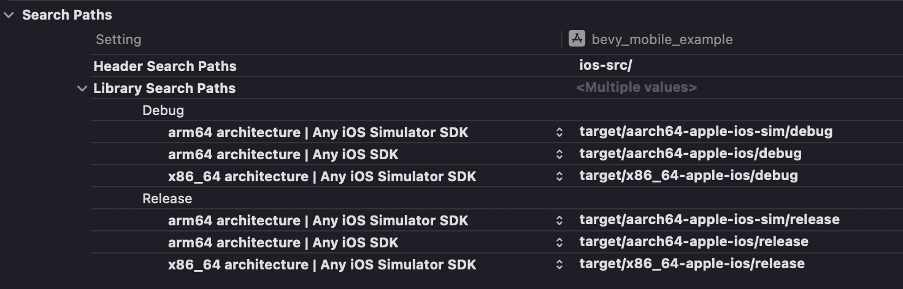
Fixing assets
Let's look at the Project navigator. The assets directory is also broken because of relative links.
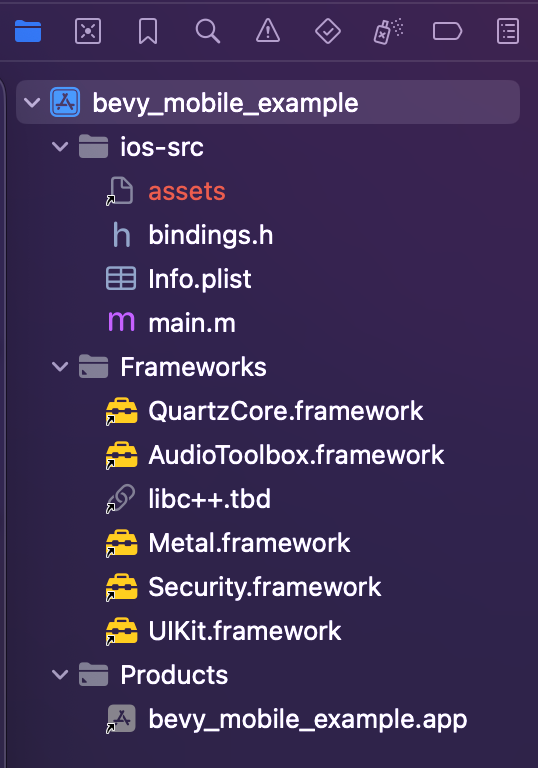
We can fix this by selecting the assets directory in the Project navigator, and showing the Inspector with the top right icon on the XCode window. In this pane, under "Identity and Type" is "Location" with the value ../../../assets. First, create the assets directory in your project root, and then change the location path to ../assets.
If you are using Git, you might want to add a
.gitkeepin your assets directory if it's empty.
Renaming the project
We don't really want to publish an app called bevy_mobile_example, so lets select the project, select the bevy_mobile_example target, select the text again, and rename it to whatever we want. In my case, I'll choose ios_template, but you can name it whatever you want. Take note of the name you choose.
We're going to need to change 1 more options in target Build Settings:
- Linking - General
- Other Linker Flags
- Existing value:
$(inherited) -lbevy_mobile_example -lc++abi - New value:
$(inherited) -lios_template -lc++abi
- Existing value:
- Other Linker Flags
Cargo.toml changes
If you have an existing
Cargo.tomlfrom a0.16project, you should be able to skip this section. Just note your library name matches what you just set!
There are still a few issues with our project's Cargo.toml. Dependency paths don't exist as this is no longer an example project.
[package]
name = "bevy_mobile_example"
# ...
[lib]
name = "bevy_mobile_example"
crate-type = ["staticlib", "cdylib"]
[dependencies]
bevy = { path = "../../" }
[target.aarch64-apple-ios-sim.dependencies]
bevy = { path = "../../", features = ["ios_simulator"] }
[lints]
workspace = trueChange your toml to the following. Realistically, you're probably going to want a different package name than default, so I'll change mine here too so we can follow along together. Let's also remove that workspace lint while we're here. Lastly, remove the whole target.aarch64-apple-ios-sim.dependencies section, as it's not needed in 0.16.
...
[package]
name = "ios_template"
# ...
[lib]
name = "ios_template"
crate-type = ["staticlib", "cdylib"]
[dependencies]
bevy = { version = "0.16" }You're probably going to want some debug optimization here too so your game doesn't take up 200% CPU
Adjusting lib.rs
At line 22 of lib.rs, the #[bevy_main] macro is used. It appears that the code this generates has changed from 0.15 to 0.16 leading to compilation errors, so remove the #[bevy_main] line entirely, and add a new function:
#[unsafe(no_mangle)]
unsafe extern "C" fn main_rs() {
main()
}Signing the app
Back in XCode, ensure that a physical device is targeted, then build and run the application. If this is your first time running the application, you might see something like this:
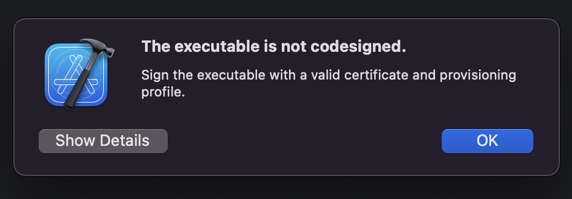
To solve this, go back to your project settings. Go to your newly-named target, go to "Signing & Capabilities", enable "Automatically manage signing", then select the desired value under "Team".
Running the app
Ensure your device is in developer mode
At this point, you can build and run the application for your physical device. It should successfully build and display the default scene.
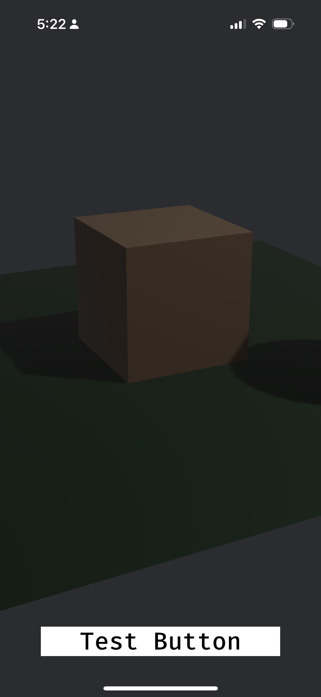
Adding SPM dependencies
Now that we have everything working with the 0.15 template, let's take advantage by adding in packages that rely on SPM dependencies. Let's add bevy_ios_gamecenter into our Rust project.
...
# ...
[dependencies]
# ...
bevy_ios_gamecenter = "=0.4.0"If you want Android and desktop builds, make sure you're using feature flags.
According to the project docs, we also need to add a package in XCode, so do that now. It is recommended to keep it on the "Exact version"
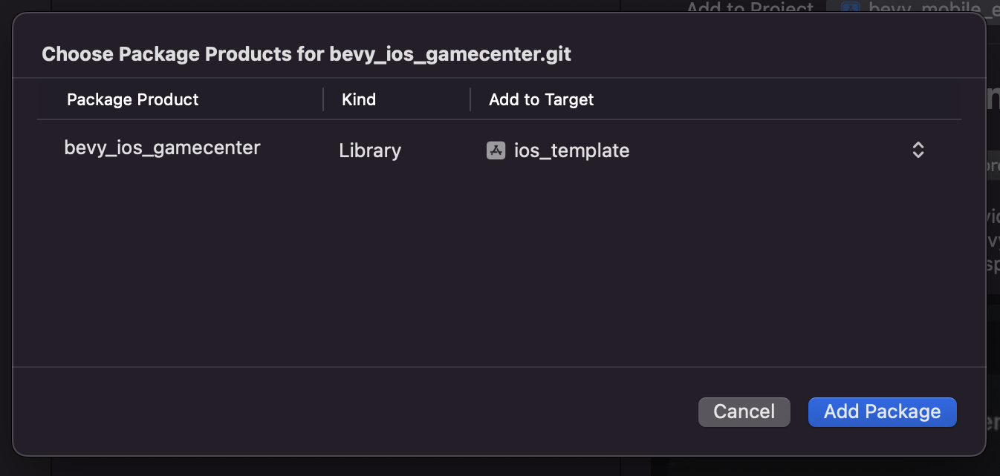
Depending on the package you're using, this might be all you need! Linking should work correctly and you can continue developing as normal. However, certain features require permissions and other setup, including Game Center.
Setting up Game Center
At this point, we'll need to create a developer account with Apple, and (create a new app to publish)[https://appstoreconnect.apple.com/apps]. In the main settings for the app, ensure that Game Center is checked. We'll also need to associate the newly created app with the existing bundle under your account. If you don't have one set up, create that now, and ensure Game Center is enabled.
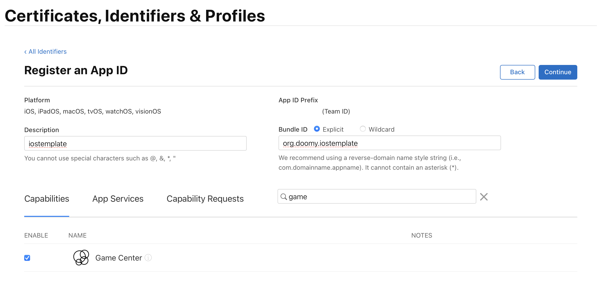
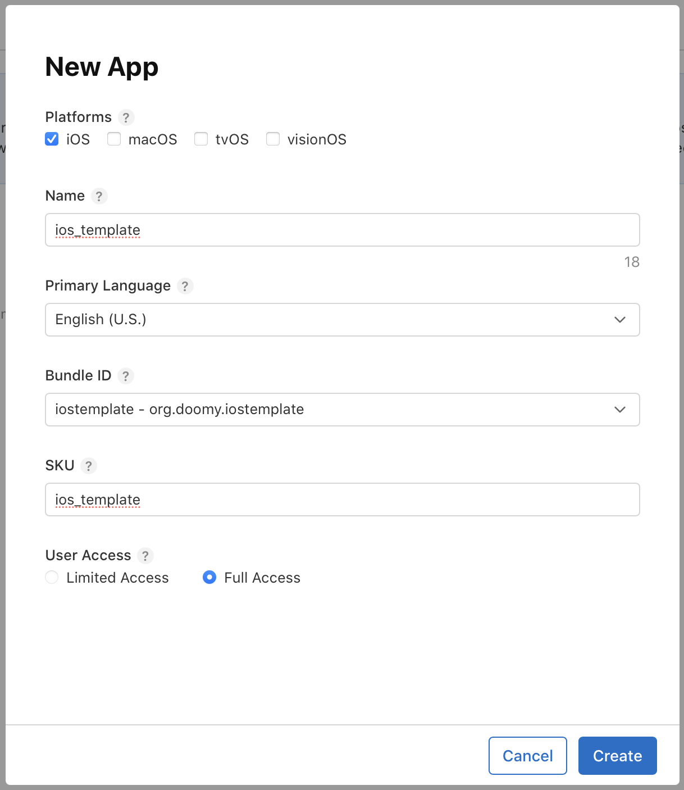
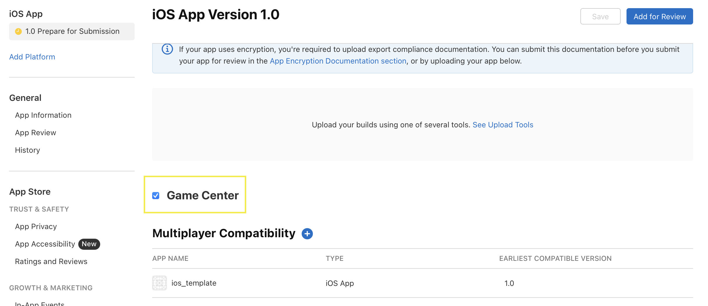
Back in XCode, ensure that the Bundle Identifier matches the one you just created.
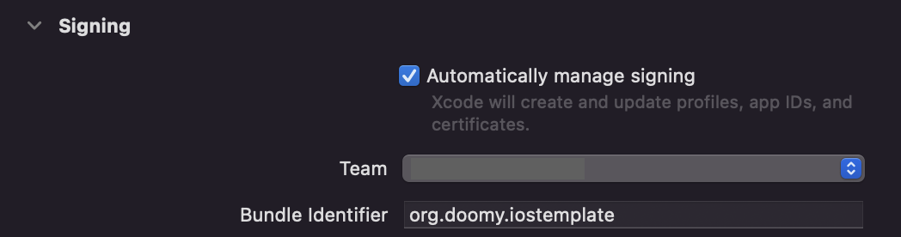
Permissions
We'll need to add a few capabilities for GameCenter to work. In Signing & Capabilities, click the "+ Capability" button, and add Game Center.
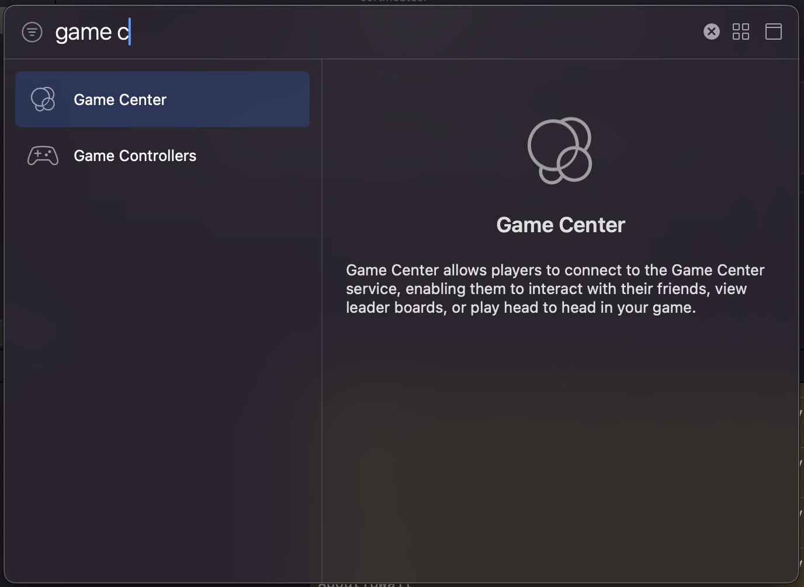
If you're taking advantage of game saves and other storage, you'll also need iCloud. If you enable iCloud, ensure "iCloud Documents" is enabled and assigned to a Container.
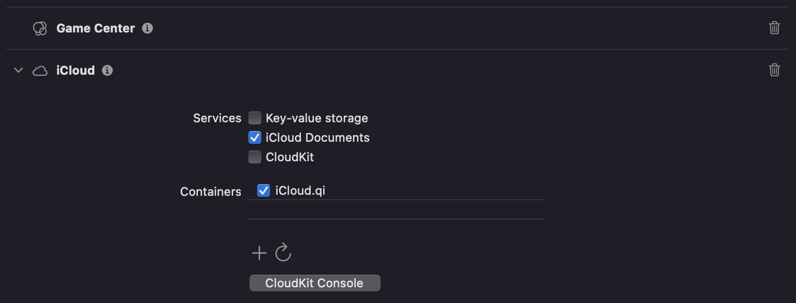
Using Game Center in Rust
It's finally time to stop fiddling with XCode and dive back into Rust. Here's what we're going to add to the mobile starter:
- The app should automatically sign in to Game Center
- When the camera view changes, its transform settings should be saved
- If a save file is present, it should be loaded and applied to the camera
First, lets add serde and ron so we can serialize and deserialize to a format.
cargo add ron serdeNext, ensure that Bevy has the serialize feature enabled.
# ...
bevy = { version = "0.16", features = ["serialize"] }While we can directly serialize the Transform to a file, in real scenarios we'll likely want a struct with all save information. We can add that to our lib.rs. Let's also add a loading state, since we'll need to wait on Game Center to load, and for our scene to spawn.
#[derive(serde::Serialize, serde::Deserialize, Resource)]
struct SaveFile {
pub(crate) camera_transform: Transform,
}
impl Default for SaveFile {
fn default() -> Self {
// Match the mobile example default transform
Self {
camera_transform: Transform::from_xyz(-2.0, 2.5, 5.0).looking_at(Vec3::ZERO, Vec3::Y),
}
}
}
#[derive(States, Clone, PartialEq, Eq, Hash, Debug, Default)]
pub enum GameState {
#[default]
Loading,
Main,
}// Ensure this is after `DefaultPlugins` are registered
// ...
.init_state::<GameState>()
.init_resource::<SaveFile>()
// ...Also in main, replace all add_systems calls so that it uses states:
// ...
.add_systems(OnEnter(GameState::Main), (setup_scene, setup_music))
.add_systems(
Update,
(touch_camera, button_handler, handle_lifetime).run_if(in_state(GameState::Main)),
)
// ...Now, let's create a system that signs into Game Center, checks for any save, loads it, and then transitions to the main state.
fn load_gamecenter(mut gc: bevy_ios_gamecenter::BevyIosGamecenter) {
use bevy_ios_gamecenter::*;
info!("Authenticating with GameCenter...");
gc.authenticate()
.on_response(|trigger: Trigger<IosGCAuthResult>, mut gc: bevy_ios_gamecenter::BevyIosGamecenter| match &trigger.event() {
IosGCAuthResult::IsAuthenticated => {
info!("Successfully authenticated GameCenter");
info!("Fetching saved games...");
gc.fetch_save_games().on_response(
|trigger: Trigger<bevy_ios_gamecenter::IosGCSaveGamesResponse>,
mut gc: bevy_ios_gamecenter::BevyIosGamecenter,
mut next_state: ResMut<NextState<GameState>>| {
match trigger.event() {
IosGCSaveGamesResponse::Done(saved_games) => {
info!("Successfully fetched saved games");
let save = saved_games.0.first();
match save.cloned() {
Some(save) => {
info!("Loading save...");
gc.load_game(save).on_response(
move |trigger: Trigger<IosGCLoadGamesResponse>,
mut save_file: ResMut<SaveFile>,
mut next_state: ResMut<NextState<GameState>>| {
match &trigger.event() {
IosGCLoadGamesResponse::Done((_save_game, data)) => {
info!("Successfully loaded save file");
if let Some(bytes) = data {
// Process the most recent save data
match ron::de::from_bytes::<SaveFile>(bytes)
{
Ok(save_data) => {
// Successfully deserialized
info!("Save file loaded and ready!");
*save_file = save_data;
}
Err(e) => {
error!("Failed to deserialize save file: {}", e);
}
}
next_state.set(GameState::Main);
}
}
IosGCLoadGamesResponse::Unknown(_ios_gcsave_game) => {
info!("Couldn't find any save files");
next_state.set(GameState::Main);
}
IosGCLoadGamesResponse::Error(e) => {
error!("Error loading save file: {}", e);
}
}
},
);
},
None => {
info!("No saves.");
next_state.set(GameState::Main);
},
}
}
IosGCSaveGamesResponse::Error(err) => {
error!("Error fetching save games: {}", err);
}
}
},
);
}
IosGCAuthResult::LoginPresented => {},
IosGCAuthResult::Error(e) => error!("auth error: {e}"),
});
}That's a lot! Most of this system is just messages for diagnosing issues, but the important flow is as follows:
- When this system is called, Game Center will attempt to authenticate.
- When authenticated, a list of save files for this app will be retrieved
- After the list is retrieved, we select a specific filename to load
- After loading the save file data, we set the
SaveFileresource to that data and transition states
We need to add this system and the Game Center plugins in our app.
// ...
.add_systems(OnEnter(GameState::Loading), load_gamecenter)
// ...app.add_plugins((
bevy_ios_gamecenter::IosGamecenterPlugin::new(true),
DefaultPlugins
// ...Because of an issue with winit, I also recommend setting the log level to error to prevent log spam.
// ...
.set(LogPlugin {
// This will show some log events from Bevy to the native logger.
level: Level::DEBUG,
filter: "wgpu=error,bevy_render=info,bevy_ecs=trace,winit=error".to_string(),
..Default::default()
})Now, we'll pass the SaveFile resource into our scene setup. Modify the following system:
fn setup_scene(
mut commands: Commands,
mut meshes: ResMut<Assets<Mesh>>,
mut materials: ResMut<Assets<StandardMaterial>>,
save_file: Res<SaveFile>, // Add this line
) {
// ...And use the save file in the system for the camera transform:
// ...
// camera
commands.spawn((Camera3d::default(), save_file.camera_transform));
// ...Finally, hook up the button to save the current camera transform.
// Test ui
commands
.spawn((
Button,
Node {
justify_content: JustifyContent::Center,
align_items: AlignItems::Center,
position_type: PositionType::Absolute,
left: Val::Px(50.0),
right: Val::Px(50.0),
bottom: Val::Px(50.0),
..default()
},
))
.with_child((
Text::new("Save"),
TextFont {
font_size: 30.0,
..default()
},
TextColor::BLACK,
TextLayout::new_with_justify(JustifyText::Center),
))
.observe(
// Save the camera position on click
|_: Trigger<Pointer<Click>>,
camera_transform: Single<&Transform, With<Camera>>,
mut gc: bevy_ios_gamecenter::BevyIosGamecenter| {
let save_data = ron::to_string(&SaveFile {
camera_transform: **camera_transform,
})
.unwrap();
gc.save_game("save.ron".to_string(), save_data.as_bytes())
.on_response(
|trigger: Trigger<bevy_ios_gamecenter::IosGCSavedGameResponse>| {
match trigger.event() {
bevy_ios_gamecenter::IosGCSavedGameResponse::Done(_save_game) => {
info!("Game saved successfully!");
}
bevy_ios_gamecenter::IosGCSavedGameResponse::Error(e) => {
error!("Failed to save game: {}", e);
}
}
},
);
},
);And that's it! We can now boot up the app, move the camera around, and save the position. When we re-open the app, the position is loaded from our save file and applied to our scene!